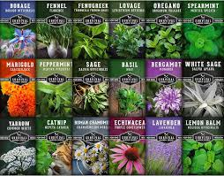

Plantas Raras con Propiedades Medicinales
Existen muchas plantas raras y exóticas que poseen propiedades medicinales únicas...
- Rafflesia arnoldii - Utilizada en la medicina tradicional del sudeste asiático para curar heridas.
- Welwitschia mirabilis - Una planta del desierto con posibles usos en tratamientos antiinflamatorios.
- Hoodia gordonii - Conocida por sus propiedades para suprimir el apetito.
Tabla de Plantas Raras y Sus Usos
| Planta | Origen | Uso Medicinal |
|---|---|---|
| Rafflesia arnoldii | Sudeste Asiático | Tratamiento de heridas y enfermedades. |
| Welwitschia mirabilis | Desierto de Namibia | Propiedades antiinflamatorias. |
| Hoodia gordonii | Desierto de Kalahari | Supresor del apetito. |
Video de Apoyo
Para aprender más sobre las plantas medicinales raras y exóticas, te invitamos a ver el siguiente video: